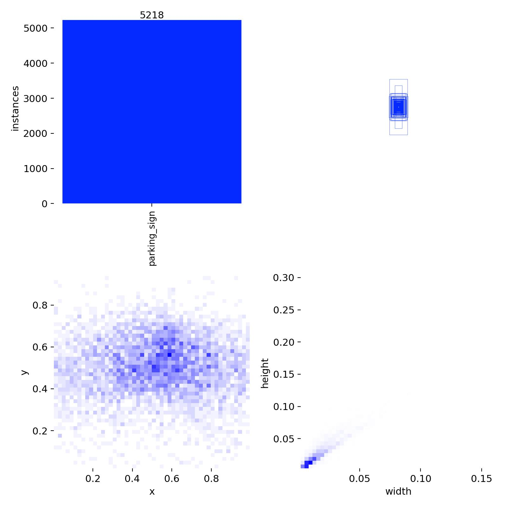
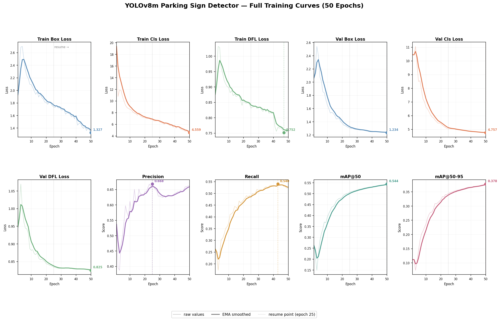

Datasets and label mapping All cues
Parking-sign dataset construction Sign
We selected the Mapillary Traffic Sign Dataset (MTSD) as the main dataset for the parking-sign cue. MTSD provides a large number of traffic-sign annotations, but it is not directly packaged for parking inference. We therefore constructed a binary parking-sign detection dataset by mapping multiple parking-related sign variants (e.g. information--parking--g1, information--parking--g5) into a single class called parking_sign.
The final mapping includes multiple no-parking, no-stopping, parking-information, tow-away, and parking-restriction sign variants. We excluded the generic other-sign label because it has no consistent visual identity and would inject substantial noise. We also filtered out annotations marked as ambiguous, occluded, out-of-frame, or dummy.
After preprocessing, our local MTSD setup contains:
In practice, our experiments rely on the validation split because the available labeled annotations correspond to train/validation data. The test split IDs exist in the released split files but are not directly usable for our local evaluation pipeline due to unavailable annotations.
Exploratory data analysis Sign
An exploratory analysis script gives us a sense of class balance and object scale. The most important findings:
- Total raw labeled objects: 206,386
- Total clean objects after filtering: 63,806
- Positive images after filtering: 4,446 (~10.6%)
- Negative images after filtering: 24,390
- Effective negative-to-positive ratio: ~5.5:1
- Total positive parking-sign instances: 5,983
- Tiny signs (< 0.1% of image area): 48,317 (~75.7%)
- Median relative object area: 0.031% of the image
The challenge is therefore not only class imbalance, but also that most signs are very small objects in large street-view images.

What Mapillary Vistas adds Meter Curb
We also analyzed Mapillary Vistas v2.0 to understand what parking-related cues are actually available beyond traffic signs. Vistas contains 123 unique classes, including explicit parking-related objects:
object--parking-meter— 839 instancesobject--traffic-sign--information-parking— 3,418 instancesconstruction--flat--parking— 3,355 instancesconstruction--flat--parking-aisle— 247 instances
And much richer curb structure:
construction--barrier--curb— 59,767 instancesconstruction--flat--curb-cut— 17,582 instances
Insight. Explicit parking objects in Vistas are relatively sparse, while curb-related scene structure is much more abundant. This made curb modeling more attractive than parking-meter modeling as a non-sign cue, although curb color itself remains harder to interpret reliably.
Parking-sign detection Sign
We trained a YOLOv8m detector on the constructed binary parking-sign dataset.
Training configuration
- Model: YOLOv8m
- Image size: 640
- Epochs: 50
- Batch size: 32
- Class loss weight: 2.0
- Augmentations: mosaic, mixup, copy-paste
Training was completed in two phases because the Kaggle session crashed after epoch 24 and had to be resumed. Even with the interruption, the final training curves were smooth and consistent, suggesting the resumed training behaved as expected.
From the combined curves: training and validation losses decrease steadily, precision stabilizes in the mid-0.6 range, recall improves more gradually (reflecting the difficulty of recovering small distant signs), and mAP@50 / mAP@50–95 continue improving through the later epochs with diminishing returns near the end. The detector is learning useful signal and is not obviously overfitting, but the task remains challenging.

Image-level evaluation Sign
A key methodological decision was to build a custom image-level evaluation script in addition to the standard YOLO box-level validation. This was necessary because the downstream task is not purely about bounding-box localization — we ultimately care whether an image contains parking-related evidence that can later be aggregated over a street segment.
Evaluation therefore has two parts:
- Box-level evaluation — standard YOLO detection metrics: mAP, precision, recall.
- Image-level evaluation — for each image, take the maximum detection confidence across all predicted boxes and turn it into a binary parking-presence score. This gives image-level precision, recall, F1, and AUROC, which align much more closely with the downstream segment-level inference objective.
Parking-meter detection (zero-shot) Meter
For parking meters, we used a zero-shot cross-dataset evaluation. We took a COCO-pretrained detector, restricted it to the parking-meter class, and evaluated it against Mapillary Vistas parking-meter annotations. Ground-truth parking-meter polygons were converted into bounding boxes so that we could compute both image-level and box-level metrics.
This is purposely a "borrow-and-evaluate" setup — it tells us how much of a parking-meter signal we can get without any in-domain supervision, and helps decide whether parking meters are usable as an auxiliary cue in the aggregation stage.
Curb segmentation and color analysis Curb
Curb-related structure is abundant in Mapillary Vistas, so we explored curbs as an additional non-sign cue. Unlike parking signs and meters, curbs are naturally better represented as a segmentation problem rather than object detection — they are long, thin, irregular structures rather than compact objects.
Binary curb segmentation
We formulated curb detection as binary semantic segmentation using construction--barrier--curb as foreground and all other pixels as background. We trained a U-Net-based segmentation model. It localizes curb regions reasonably well but the predicted masks are often thin and fragmented, especially when curbs are distant, visually smooth, or weakly separated from the road surface.
HSV-based curb color analysis
After obtaining curb masks, we run a second stage for curb color analysis. The goal is not to recover exact municipal parking rules, but to extract coarse visual categories — red, yellow, green, white, gray, unknown. In practice this turned out to be substantially harder than mask extraction itself, because color estimation is highly sensitive to mask purity: if non-curb pixels (crosswalk markings, lane paint, asphalt) are included, the resulting color distribution becomes ambiguous.
To reduce contamination, we refined the color pipeline in two ways:
- Boundary-pixel extraction. We restrict color extraction to boundary pixels derived from the predicted mask, since the curb itself is most naturally expressed as a thin boundary rather than a filled region.
- Confidence-margin rule. A color prediction is accepted only if the top color score is both sufficiently large and sufficiently separated from the second-best score. Otherwise, the result is labeled
unknown.
This makes the curb-color output intentionally conservative — preferable for downstream cue fusion and easier to justify in qualitative analysis.
Segment-level aggregation methodology Aggregation
The final stage of the system aggregates per-image cue predictions into a segment-level score. This sits in methodology rather than results because aggregation changes the unit of inference: the earlier detectors answer "what cue is visible in this image?" while aggregation answers "does this local segment contain enough parking-related evidence across multiple views?"
For each image $i$ in a five-image segment, we record three model-derived scores:
- $s_i$ — maximum parking-sign confidence in the image,
- $m_i$ — maximum parking-meter confidence in the image,
- $c_i$ — positive curb-color score, defined as the maximum of the yellow, green, and white curb-color scores. Red is excluded because red curbs usually indicate no parking. In a more complete rule-aware system, red could be modeled as negative evidence; here we simply exclude it from the positive curb score to keep aggregation simple.
We experimented with max, mean, count-above-threshold, and noisy-OR features. The primary reported aggregation rule is a weighted max:
$$ S_{\text{segment}} = \max\!\left(\max_i s_i,\; 0.6 \max_i m_i,\; 0.4 \max_i c_i\right). $$
Why max-pooling and these weights?
Max pooling is motivated by the multiple-instance nature of the task. A street segment can be positive even if only one of its views contains a visible parking sign or meter. Averaging across views would dilute exactly the sparse evidence we are trying to recover. Max pooling instead asks whether any view contains strong evidence.
The weights are simple reliability-based heuristics, not learned parameters:
| Cue | Weight | Reasoning |
|---|---|---|
| Parking sign | 1.0 | Most direct and best-performing cue. |
| Parking meter (zero-shot) | 0.6 | Informative but noisy in the zero-shot setting. |
| Curb color | 0.4 | Most indirect; depends heavily on segmentation quality. |
Weights encode the relative trustworthiness observed in the preceding experiments, not a learned calibration. A future system should learn cue weights on a larger georeferenced validation set.
For training curves, threshold sweeps, and the segment-level aggregation experiments, see the Results page. For practical infrastructure challenges (Kaggle interruptions, storage limits, GPU access), see the Challenges page.